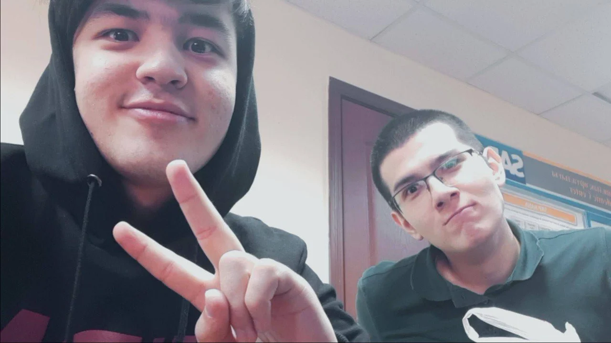

Кольца —
game changer.
Трицепсы в ахуе.
Даурен доволен.
САЛАМ, БРАД.
Один маленький сайт.
Всё, что не помещается в «с днюхой».
Просто оказались в одной группе.
А потом как-то стали семьёй.

два дебила. начало истории.Пары, лабы, разговоры между делом. Тогда это была обычная жизнь. Сейчас — те самые студенческие годы, за которые я тебе благодарен.
«Прост тот Даурен с универа иногда даёт о себе знать».ДАУРЕН · 17.07.2025
Фотографии старые. Люди те же. Только теперь кто-то лид на проекте.
Очки. Цезарь. Железная хватка.
Узнаю из тысячи.
Трицепсы в ахуе.
Даурен доволен.
«Вы засранцы Ori не прошли».
История, боёвка, музыка — всё на высоте.
Разберётся. Подскажет.
Потом ещё подъебёт.
Вера. Терпение. Близкие.
И умение оставаться собой.
Некоторые говорят «я тебя ценю».
Мы говорим «засранец».
Обещание принято. Даурен будет проверять.
Три вопроса. Без пересдачи.
Впрочем, тут оба засранцы.
«От твоего слишком потного друхана»
Ты сделал чужой город своим.
Просто потому, что был рядом.
Я могу не говорить это каждый день.
Но я это помню.
Дай Бог до самого конца будем так дружны и поддерживать друг друга во всех этапах жизни🤲🏻МОИ СЛОВА ТЕБЕ · 12.07.2026
Я запомнил, засранец.
Сегодня этот миллион — тебе.
сердец. отдуши.
База цела. Братство тоже.Салам, брад.
Семь лет назад мы просто оказались в одной группе. Я тогда ещё не знал, что рядом сидит человек, который станет мне настолько близким. Что обычные пары, разговоры и вся наша универская хуйня потом будут вспоминаться с такой теплотой.
Ты знаешь, я уже говорил тебе: благодаря тебе у меня были лучшие студенческие годы. Даже в чужом городе я не чувствовал себя одиноким. Это не красивая фраза для поздравления. Это то, за что я тебе до сих пор благодарен.
Я люблю, что с тобой можно поржать до слёз, послать друг друга нахер и через минуту говорить о чём-то серьёзном. Что не надо подбирать слова, притворяться или объяснять, почему сегодня тяжело. Можно просто быть собой.
Сейчас у нас работа, свои дела, разное расстояние до Алматы. Но ты всё тот же брад. Тот, кто помнит, чем я угощал в универе. Кто ждёт на катку. Кто в своём поздравлении пишет так, что я потом сижу и думаю: бля, как же мне повезло.
Желаю тебе того дома, о котором ты рассказываешь. С турником, кольцами, брусьями и теннисным столом. Спокойствия за маму и близких. Здоровья, крепкой веры и работы, которой ты доволен. Чтобы хватало и на планы, и на хотелки. И чтобы рядом были люди, с которыми тебе хорошо.
Ты много стараешься. Хочу, чтобы в твоей жизни было больше дней, когда можно просто выдохнуть и сказать: «Кайф. Я на своём месте».
Спасибо, что ты есть, родной. За все наши годы. За смех. За разговоры. За тебя.
С днюхой, засранец.
Я рядом. И в следующей главе тоже.
P.S. Обнимаю. Только рёбра оставь — ты же знаешь свою силу.
Ну что, брад. В пятницу катаем?
Четыре героини. Легендарный лут. И твоя новая история.